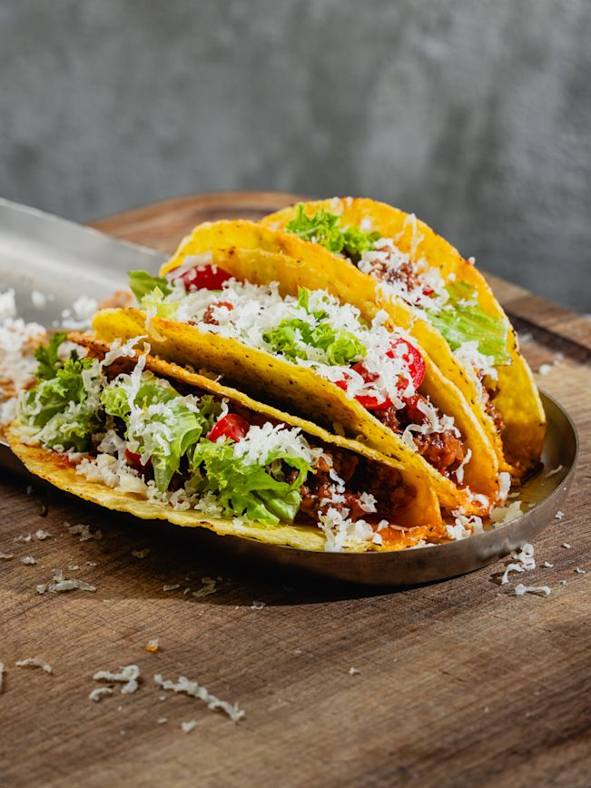
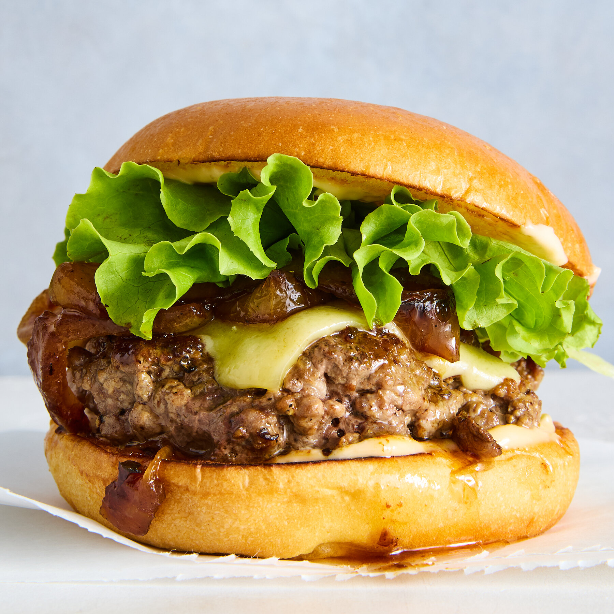

This is a paragraph.
Japanese noodle soup with rich broth and tasty toppings.
Sweet frozen dessert enjoyed in countless flavors worldwide.
Spiced dish from Asia with meat, vegetables, and flavorful sauces.
Crispy and juicy chicken coated in seasoned batter and deep-fried.

Mexican dish of folded tortillas filled with meat, veggies, and toppings.

Grilled beef patty served in a bun, often with cheese and toppings.
Japanese dish of vinegared rice with raw fish, seafood, or vegetables.
Staple food in many cultures, served plain or in flavorful recipes.
Italian staple made from wheat, served with sauces like tomato or cream.
Oven-baked flatbread topped with tomato, cheese, and various toppings.